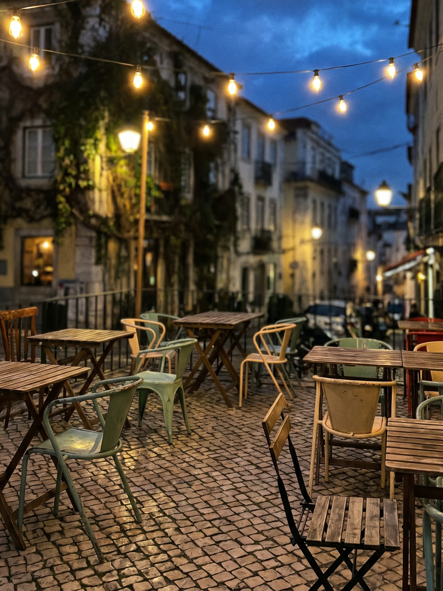

<title>Gracejo 831</title>
<meta name="viewport" content="width=device-width, initial-scale=1" />
<link rel="preconnect" href="https://fonts.googleapis.com" />
<link rel="preconnect" href="https://fonts.gstatic.com" crossorigin />
<link href="https://fonts.googleapis.com/css2?family=Bricolage+Grotesque:opsz,wght@12..96,200..800&family=Instrument+Serif:ital@0;1&family=Archivo:wght@400;500;600;700&display=swap" rel="stylesheet" />
<link rel="stylesheet" href="styles.css" />

<style>
  /* ---------- Hero: the ember grate ---------- */
  .hero-pin-wrap {
    position: relative;
    border-bottom: 1px solid var(--line);
  }
  .grate-animated .hero-pin-wrap { height: 220vh; }

  .hero {
    position: sticky;
    top: var(--nav-h);
    height: calc(100vh - var(--nav-h));
    overflow: hidden;
    display: flex;
    align-items: flex-end;
    padding-block: clamp(2rem, 6vw, 3.5rem) clamp(2.5rem, 7vw, 4.5rem);
  }

  .grate-scene {
    position: absolute;
    inset: 0;
    z-index: 0;
    perspective: 1400px;
    background: radial-gradient(120% 90% at 50% 12%, var(--charcoal-3), var(--charcoal) 72%);
  }
  .grate-stage {
    position: absolute;
    inset: -8% -5%;
    transform-style: preserve-3d;
    transform-origin: 50% 72%;
    transform: rotateX(calc(34deg - var(--resolve, 1) * 22deg)) scale(calc(1.08 - var(--resolve, 1) * 0.14));
    filter: brightness(calc(1 - var(--resolve, 1) * 0.6)) saturate(calc(1 - var(--resolve, 1) * 0.25));
  }
  .grate-embers {
    position: absolute;
    inset: 10% 5%;
    border-radius: 8px;
    background:
      radial-gradient(30% 40% at 30% 40%, rgba(221, 106, 48, 0.75), rgba(221, 106, 48, 0) 74%),
      radial-gradient(34% 42% at 72% 62%, rgba(200, 84, 36, 0.65), rgba(200, 84, 36, 0) 74%),
      radial-gradient(100% 100% at 50% 50%, rgba(45, 20, 10, 0.92), rgba(18, 9, 5, 0.96));
    opacity: var(--ignite, 1);
    filter: blur(10px) saturate(1.1);
    box-shadow: 0 0 calc(30px + 70px * var(--ignite, 1)) rgba(221, 106, 48, calc(var(--ignite, 1) * 0.6));
  }
  .grate-bars {
    position: absolute;
    inset: 8% 4%;
    display: flex;
    flex-direction: column;
    justify-content: space-between;
    transform: translateZ(44px);
  }
  .grate-bar {
    height: 9%;
    border-radius: 3px;
    background: linear-gradient(180deg, var(--iron-hi), var(--iron) 55%, #17130f);
    box-shadow: 0 3px 0 rgba(0, 0, 0, 0.55), inset 0 1px 0 rgba(255, 255, 255, 0.08);
  }
  .grate-bars-v {
    position: absolute;
    inset: 8% 4%;
    display: flex;
    justify-content: space-between;
    transform: translateZ(30px);
    opacity: 0.6;
  }
  .grate-bar-v {
    width: 5%;
    border-radius: 3px;
    background: linear-gradient(90deg, var(--iron-hi), var(--iron) 55%, #17130f);
  }
  .grate-smoke {
    position: absolute;
    inset: 0;
    pointer-events: none;
    opacity: calc(var(--ignite, 1) * 0.4);
  }
  .smoke-puff {
    position: absolute;
    width: 18vw;
    height: 18vw;
    max-width: 220px;
    max-height: 220px;
    background: radial-gradient(circle, rgba(236, 227, 210, 0.28), rgba(236, 227, 210, 0) 70%);
    filter: blur(14px);
    border-radius: 50%;
    animation: smoke-drift 9s ease-in-out infinite;
  }
  .smoke-puff:nth-child(1) { left: 14%; bottom: 30%; animation-delay: 0s; }
  .smoke-puff:nth-child(2) { left: 62%; bottom: 20%; animation-delay: 3.5s; }
  @keyframes smoke-drift {
    0% { transform: translateY(0) scale(0.8); opacity: 0; }
    30% { opacity: 0.85; }
    100% { transform: translateY(-140%) scale(1.3); opacity: 0; }
  }
  @media (prefers-reduced-motion: reduce) {
    .smoke-puff { animation: none; opacity: 0.4; }
  }

  .grate-cut {
    position: absolute;
    right: 6%;
    transform-style: preserve-3d;
  }
  .grate-cut-1 {
    top: 6%;
    width: min(20vw, 170px);
    transform: translateY(calc(-42vh + var(--cuts1, 1) * 42vh)) translateZ(90px) rotateX(calc(70deg - var(--cuts1, 1) * 70deg)) rotate(-8deg);
  }
  .grate-cut svg {
    width: 100%;
    height: auto;
    filter: drop-shadow(0 14px 18px rgba(0, 0, 0, 0.55));
  }
  @media (max-width: 760px) {
    .grate-cut-1 { top: 4%; right: 10%; width: min(28vw, 120px); }
  }

  .hero-scrim {
    position: absolute;
    inset: 0;
    z-index: 1;
    pointer-events: none;
    background: linear-gradient(100deg, rgba(23, 18, 16, calc(0.35 + var(--resolve, 1) * 0.55)) 0%, rgba(23, 18, 16, calc(0.22 + var(--resolve, 1) * 0.45)) 42%, rgba(23, 18, 16, calc(var(--resolve, 1) * 0.15)) 70%, transparent 88%);
  }

  .hero-copy {
    position: relative;
    z-index: 2;
    opacity: var(--resolve, 1);
    transform: translateY(calc(30px - var(--resolve, 1) * 30px));
  }

  .hero h1 {
    font-weight: 800;
    line-height: 0.86;
    font-size: clamp(3.6rem, 13vw, 9.5rem);
    letter-spacing: -0.01em;
  }
  .hero h1 .num { color: var(--ember); }

  .hero-tagline {
    font-family: var(--font-serif);
    font-style: italic;
    font-size: clamp(1.4rem, 2.6vw, 2.05rem);
    color: var(--bone);
    max-width: 30ch;
    margin-top: 1.6rem;
  }

  .hero-sub {
    max-width: 46ch;
    color: var(--bone-dim);
    margin-top: 1.25rem;
    font-size: 1.02rem;
  }

  .hero-ctas {
    display: flex;
    flex-wrap: wrap;
    gap: 0.9rem;
    margin-top: 2.4rem;
  }

  /* ---------- A Casa ---------- */
  .casa {
    background: var(--charcoal-2);
    border-bottom: 1px solid var(--line);
  }
  .casa-grid {
    display: grid;
    grid-template-columns: 1.3fr 1fr;
    gap: clamp(2rem, 6vw, 5rem);
    align-items: start;
  }
  @media (max-width: 860px) {
    .casa-grid { grid-template-columns: 1fr; }
  }
  .casa-body p { color: var(--bone-dim); font-size: 1.02rem; max-width: 58ch; }
  .casa-body p + p { margin-top: 1.1rem; }

  blockquote.pull {
    margin: 2.2rem 0 0;
    padding-left: 1.4rem;
    border-left: 2px solid var(--ember);
  }
  blockquote.pull p {
    font-family: var(--font-serif);
    font-style: italic;
    font-size: clamp(1.3rem, 2.4vw, 1.7rem);
    color: var(--bone);
    max-width: 24ch;
  }
  blockquote.pull cite {
    display: block;
    font-style: normal;
    font-size: 0.78rem;
    letter-spacing: 0.08em;
    text-transform: uppercase;
    color: var(--brass);
    margin-top: 0.7rem;
  }

  .stub {
    background: var(--charcoal);
    border: 1px solid var(--line);
    border-radius: 18px;
    padding: 2rem;
    position: relative;
  }
  .stub::before {
    content: "";
    position: absolute;
    inset: 10px;
    border: 1px dashed var(--line);
    border-radius: 12px;
    pointer-events: none;
  }
  .stub-row {
    display: flex;
    justify-content: space-between;
    gap: 1rem;
    padding-block: 0.85rem;
    border-bottom: 1px solid var(--line);
    font-size: 0.9rem;
  }
  .stub-row:last-child { border-bottom: none; }
  .stub-row .k { color: var(--bone-dim); }
  .stub-row .v { font-weight: 600; text-align: right; font-variant-numeric: tabular-nums; }

  /* ---------- Cardápio ---------- */
  .foco-grid {
    display: flex;
    gap: 0.75rem;
    height: clamp(220px, 34vw, 380px);
    margin-bottom: clamp(2.5rem, 6vw, 3.5rem);
  }
  .foco-item {
    position: relative;
    flex: 1 1 0;
    min-width: 0;
    display: flex;
    flex-direction: column;
    justify-content: flex-end;
    border-radius: 16px;
    overflow: hidden;
    border: 1px solid var(--line);
    padding: 0;
    margin: 0;
    cursor: pointer;
    background: var(--charcoal-2);
    transition: flex-grow 0.55s cubic-bezier(0.16, 0.84, 0.44, 1);
  }
  .foco-item.is-active { flex-grow: 3.2; }
  .foco-item img {
    position: absolute;
    inset: 0;
    width: 100%;
    height: 100%;
    object-fit: cover;
    filter: saturate(0.82) brightness(0.7);
    transition: filter 0.5s ease;
  }
  .foco-item.is-active img { filter: saturate(1.05) brightness(1); }
  .foco-item::after {
    content: "";
    position: absolute;
    inset: 0;
    background: linear-gradient(180deg, rgba(23, 18, 16, 0) 42%, rgba(23, 18, 16, 0.88));
  }
  .foco-label {
    position: relative;
    z-index: 1;
    display: block;
    padding: 1.1rem;
    font-family: var(--font-display);
    font-weight: 700;
    font-size: 0.95rem;
    color: var(--bone);
    text-align: left;
  }
  .foco-item:focus-visible { outline: 2px solid var(--ember); outline-offset: 3px; }
  @media (max-width: 700px) {
    .foco-grid { flex-direction: column; height: auto; }
    .foco-item { flex: 0 0 auto; height: 110px; }
    .foco-item.is-active { height: 220px; }
  }
  @media (prefers-reduced-motion: reduce) {
    .foco-item { transition: none; }
    .foco-item img { transition: none; }
  }

  .menu-grid {
    display: grid;
    grid-template-columns: repeat(3, 1fr);
    gap: 1.25rem;
  }
  @media (max-width: 900px) { .menu-grid { grid-template-columns: repeat(2, 1fr); } }
  @media (max-width: 560px) { .menu-grid { grid-template-columns: 1fr; } }

  .menu-card {
    background: var(--charcoal-2);
    border: 1px solid var(--line);
    border-radius: 16px;
    padding: 1.9rem 1.7rem;
    transition: border-color 0.2s ease, transform 0.2s ease, background 0.2s ease;
  }
  .menu-card:hover {
    border-color: var(--ember-dim);
    transform: translateY(-3px);
    background: var(--charcoal-3);
  }
  .menu-card .icon {
    width: 2.4rem;
    height: 2.4rem;
    color: var(--ember);
    margin-bottom: 1.1rem;
  }
  .menu-card h3 {
    font-size: 1.25rem;
    font-weight: 700;
    margin-bottom: 0.55rem;
  }
  .menu-card p {
    color: var(--bone-dim);
    font-size: 0.93rem;
  }

  .menu-note {
    display: flex;
    justify-content: space-between;
    align-items: center;
    gap: 1.5rem;
    flex-wrap: wrap;
    margin-top: 2.5rem;
    padding-top: 2rem;
    border-top: 1px solid var(--line);
  }
  .menu-note p { color: var(--bone-dim); font-size: 0.92rem; max-width: 42ch; }

  /* ---------- Ambiente ---------- */
  .ambiente { background: var(--charcoal-2); border-bottom: 1px solid var(--line); }
  .mood-grid {
    display: grid;
    grid-template-columns: repeat(4, 1fr);
    gap: 1.1rem;
  }
  @media (max-width: 900px) { .mood-grid { grid-template-columns: repeat(2, 1fr); } }
  .mood-card {
    aspect-ratio: 3 / 4;
    border-radius: 16px;
    border: 1px solid var(--line);
    position: relative;
    overflow: hidden;
    display: flex;
    align-items: flex-end;
    padding: 1.2rem;
    background: var(--charcoal-3);
  }
  .mood-card img {
    position: absolute;
    inset: 0;
    width: 100%;
    height: 100%;
    object-fit: cover;
    filter: saturate(0.92) brightness(0.88);
    transition: transform 0.6s cubic-bezier(0.16, 0.84, 0.44, 1), filter 0.6s ease;
  }
  .mood-card:hover img { transform: scale(1.06); filter: saturate(1.02) brightness(0.95); }
  .mood-card span {
    position: relative;
    z-index: 1;
    font-family: var(--font-display);
    font-weight: 700;
    font-size: 1rem;
    color: var(--bone);
    text-wrap: balance;
  }
  .mood-card::after {
    content: "";
    position: absolute;
    inset: 0;
    z-index: 0;
    background: linear-gradient(180deg, rgba(23,18,16,0.05) 30%, rgba(23,18,16,0.85));
  }
  @media (prefers-reduced-motion: reduce) {
    .mood-card img { transition: none; }
    .mood-card:hover img { transform: none; }
  }

  /* ---------- Horarios ---------- */
  .info-grid {
    display: grid;
    grid-template-columns: 1fr 1fr;
    gap: clamp(2rem, 6vw, 4rem);
  }
  @media (max-width: 860px) { .info-grid { grid-template-columns: 1fr; } }

  table.hours { width: 100%; border-collapse: collapse; }
  table.hours td {
    padding: 0.95rem 0;
    border-bottom: 1px solid var(--line);
    font-size: 0.98rem;
  }
  table.hours td:first-child { color: var(--bone-dim); }
  table.hours td:last-child { text-align: right; font-weight: 600; font-variant-numeric: tabular-nums; }
  table.hours tr:last-child td { border-bottom: none; }

  .addr-block { margin-top: 2rem; }
  .addr-block .eyebrow { margin-bottom: 0.5rem; }
  .addr-block p { font-size: 1.05rem; }
  .addr-actions { display: flex; gap: 0.75rem; margin-top: 1.25rem; flex-wrap: wrap; }

  /* ---------- CTA band ---------- */
  .cta-band {
    background: linear-gradient(135deg, var(--malbec), #4a1620 65%, var(--charcoal));
    border-top: 1px solid var(--line);
    border-bottom: 1px solid var(--line);
  }
  .cta-inner {
    display: flex;
    justify-content: space-between;
    align-items: center;
    gap: 2rem;
    flex-wrap: wrap;
  }
  .cta-band h2 { font-size: clamp(1.9rem, 4.5vw, 2.8rem); max-width: 16ch; }
  .cta-band .btn-ghost { border-color: rgba(236, 227, 210, 0.35); }
  .cta-band .btn-ghost:hover { border-color: var(--bone); background: rgba(236,227,210,0.08); }

</style>

<!--
THESIS: The hero is the parrilla's own ignition ritual, not a header — cold cast
iron waking into ember heat in 3D scroll, refusing the warm-photo-header every
bairro restaurant site ships.
OWN-WORLD: near-black iron and charcoal ground, ember-orange as the one
saturated ignition event, malbec reserved for the CTA band; Bricolage
Grotesque display, Instrument Serif italic accents, Archivo body carried
over from the incumbent system.
STORY: the visitor scrolls into a dark grate, watches embers spread and two
cuts lower onto it, then GRACEJO 831 and the reservation CTA resolve as the
scene recedes; scrolling on meets a focus-driven cardápio strip built on the
three real kitchen photos before the existing sections continue unchanged.
FIRST VIEWPORT: full-bleed 3D-perspective grate pinned through ~2.2 screens
of scroll — cold iron, ember sweep, two cuts descending with rotation, then
the camera pulls back and the wordmark/tagline/CTAs settle over the dimmed,
receded scene.
FORM: The Ember Grate — Impeccable's Pick (rank 1 of 7), chosen over the
rolled assignment "The Shutter Lift" (rank 4); seed 4e2ecc17.
FINISH: unreviewed and undocumented is unfinished; this build ends with the
finish review, the verdict, DESIGN.md, and every shipping raster carrying
its provenance.
-->
<header class="site">
  <nav class="nav wrap">
    <a href="#top" class="brand">GRACEJO<span>831</span></a>
    <div class="nav-links">
      <a href="#casa">A Casa</a>
      <a href="#cardapio">Cardápio</a>
      <a href="#ambiente">Ambiente</a>
      <a href="#horarios">Horários</a>
      <a class="btn btn-ghost" href="pedir.html">Pedir Online</a>
      <a class="btn btn-ember" href="https://www.instagram.com/gracejo831_/" target="_blank" rel="noopener">Reservar</a>
    </div>
  </nav>
</header>

<main id="top">
  <div class="hero-pin-wrap" data-grate-wrap>
    <section class="hero">
      <div class="grate-scene" aria-hidden="true">
        <div class="grate-stage">
          <div class="grate-embers"></div>
          <div class="grate-bars-v">
            <span class="grate-bar-v"></span><span class="grate-bar-v"></span><span class="grate-bar-v"></span>
          </div>
          <div class="grate-bars">
            <span class="grate-bar"></span><span class="grate-bar"></span><span class="grate-bar"></span>
            <span class="grate-bar"></span><span class="grate-bar"></span>
          </div>
          <div class="grate-smoke">
            <span class="smoke-puff"></span><span class="smoke-puff"></span>
          </div>
          <div class="grate-cut grate-cut-1">
            <svg viewBox="0 0 200 140" class="cut-shape">
              <defs>
                <linearGradient id="sear1" x1="0" y1="0" x2="1" y2="1">
                  <stop offset="0" stop-color="#c96a3a" />
                  <stop offset="0.55" stop-color="#7c3620" />
                  <stop offset="1" stop-color="#3c1810" />
                </linearGradient>
              </defs>
              <path d="M18,68 C10,28 62,6 102,12 C154,6 194,32 188,74 C194,112 150,134 100,130 C52,136 10,116 18,68 Z" fill="url(#sear1)" />
              <g stroke="#2a120a" stroke-width="4" stroke-linecap="round" opacity="0.5">
                <line x1="45" y1="26" x2="155" y2="90" />
                <line x1="60" y1="14" x2="172" y2="78" />
              </g>
              <ellipse cx="150" cy="35" rx="26" ry="14" fill="#e9c98f" opacity="0.28" />
            </svg>
          </div>
        </div>
      </div>
      <div class="hero-scrim" aria-hidden="true"></div>
      <div class="hero-copy wrap">
        <h1>GRACEJO<br /><span class="num">831</span></h1>
        <p class="hero-tagline">Fogo baixo, vinho aberto e um bom gracejo na mesa.</p>
        <p class="hero-sub">Parrilla brasileiro-uruguaia no coração boêmio da Cidade Baixa, Porto Alegre. Cortes no ponto, adega escolhida a dedo e uma casa que recebe até o seu cachorro.</p>
        <div class="hero-ctas">
          <a class="btn btn-ember" href="https://www.instagram.com/gracejo831_/" target="_blank" rel="noopener">Reservar mesa</a>
          <a class="btn btn-ghost" href="pedir.html">Pedir online</a>
        </div>
      </div>
    </section>
  </div>

  <section class="casa" id="casa">
    <div class="wrap casa-grid">
      <div class="casa-body">
        <span class="eyebrow">A Casa</span>
        <h2 style="margin-top:0.6rem; font-size:clamp(2rem,4.2vw,2.8rem); max-width:16ch;">Uma parrilla com sotaque de bar de esquina.</h2>
        <p>Na Venâncio Aires, 831, o Gracejo mistura o ritual da parrilla — brasa baixa, cortes generosos, pão de alho que não sobra na mesa — com a informalidade de um bom bar de bairro.</p>
        <p>É o tipo de casa em que se senta às 17h para um aperitivo e se fica até depois da meia-noite, porque sempre surge mais um vinho, mais uma história, mais um gracejo. Cães são bem-vindos — e costumam ficar tão à vontade quanto os donos.</p>
        <blockquote class="pull">
          <p>&ldquo;O pão de alho é impossível de parar de comer.&rdquo;</p>
          <cite>— cliente, Tripadvisor</cite>
        </blockquote>
      </div>
      <div class="stub">
        <div class="stub-row"><span class="k">Bairro</span><span class="v">Cidade Baixa</span></div>
        <div class="stub-row"><span class="k">Cozinha</span><span class="v">Parrilla BR · UY</span></div>
        <div class="stub-row"><span class="k">Ambiente</span><span class="v">Casa &amp; terraço</span></div>
        <div class="stub-row"><span class="k">Pet friendly</span><span class="v">Sim</span></div>
        <div class="stub-row"><span class="k">Reservas</span><span class="v">Via Instagram</span></div>
      </div>
    </div>
  </section>

  <section id="cardapio">
    <div class="wrap">
      <div class="section-head">
        <div>
          <span class="eyebrow">Cardápio</span>
          <h2>O que sai da brasa — e da adega.</h2>
        </div>
        <p>Seis frentes, uma só cozinha: da parrilla ao vinho, pensadas para ficar na mesa a noite toda.</p>
      </div>
      <div class="foco-grid" data-foco>
        <button class="foco-item is-active" data-foco-item aria-pressed="true">
          
          <span class="foco-label">Direto da brasa</span>
        </button>
        <button class="foco-item" data-foco-item aria-pressed="false">
          
          <span class="foco-label">Cogumelos na chapa</span>
        </button>
        <button class="foco-item" data-foco-item aria-pressed="false">
          
          <span class="foco-label">Carne &amp; Malbec</span>
        </button>
      </div>
      <div class="menu-grid">
        <article class="menu-card">
          <svg class="icon" viewBox="0 0 24 24" fill="none" stroke="currentColor" stroke-width="1.4"><path d="M12 21c4-1 6-4 6-7.5S15 6 14 3c0 3-2 4-2 7-1-1-1-3-1-4-3 2-4 5-4 8s2 6 5 7Z"/></svg>
          <h3>Parrilla</h3>
          <p>Cortes generosos na brasa baixa, no ponto que a casa recomenda — e defende.</p>
        </article>
        <article class="menu-card">
          <svg class="icon" viewBox="0 0 24 24" fill="none" stroke="currentColor" stroke-width="1.4"><line x1="3" y1="12" x2="21" y2="12"/><circle cx="7" cy="12" r="1.4" fill="currentColor" stroke="none"/><circle cx="12" cy="12" r="1.4" fill="currentColor" stroke="none"/><circle cx="17" cy="12" r="1.4" fill="currentColor" stroke="none"/><path d="M3 12c0-2 1-3 2-3M21 12c0-2-1-3-2-3"/></svg>
          <h3>Fake</h3>
          <p>Petiscos para abrir a mesa enquanto a brasa faz o resto do trabalho.</p>
        </article>
        <article class="menu-card">
          <svg class="icon" viewBox="0 0 24 24" fill="none" stroke="currentColor" stroke-width="1.4"><path d="M4 11h16M4 11a8 5 0 0 1 16 0M4 11c0 3 2 5 4 6h8c2-1 4-3 4-6" stroke-linecap="round"/></svg>
          <h3>Hambúrgueres</h3>
          <p>Blend próprio, montagem sem pressa, servido como prato principal.</p>
        </article>
        <article class="menu-card">
          <svg class="icon" viewBox="0 0 24 24" fill="none" stroke="currentColor" stroke-width="1.4"><path d="M12 3 21 20H3Z"/><circle cx="12" cy="13" r="0.9" fill="currentColor" stroke="none"/><circle cx="9" cy="16" r="0.9" fill="currentColor" stroke="none"/><circle cx="15" cy="16.5" r="0.9" fill="currentColor" stroke="none"/></svg>
          <h3>Pizza</h3>
          <p>Massa de fermentação longa, forno quente, ideal para dividir na mesa.</p>
        </article>
        <article class="menu-card">
          <svg class="icon" viewBox="0 0 24 24" fill="none" stroke="currentColor" stroke-width="1.4"><path d="M6 3h12l-1.5 9a4.5 4.5 0 0 1-9 0Z"/><path d="M12 15v6M8 21h8"/></svg>
          <h3>Sobremesas</h3>
          <p>Fechamento doce, na medida certa para quem ainda vai pedir mais um vinho.</p>
        </article>
        <article class="menu-card">
          <svg class="icon" viewBox="0 0 24 24" fill="none" stroke="currentColor" stroke-width="1.4"><path d="M7 3h10l-1 8a4 4 0 0 1-8 0Z"/><path d="M12 11v7M8 21h8"/></svg>
          <h3>Vinhos &amp; Drinks</h3>
          <p>Adega curada para acompanhar carne, e uma carta de drinques que aguenta a noite toda.</p>
        </article>
      </div>
      <div class="menu-note">
        <p>Cardápio completo, com todos os cortes e rótulos da carta, disponível nos destaques do Instagram da casa.</p>
        <div class="btn-row">
          <a class="btn btn-ember" href="pedir.html">Pedir online →</a>
          <a class="btn btn-ghost" href="https://www.instagram.com/gracejo831_/" target="_blank" rel="noopener">Cardápio completo</a>
        </div>
      </div>
    </div>
  </section>

  <section class="ambiente" id="ambiente">
    <div class="wrap">
      <div class="section-head">
        <div>
          <span class="eyebrow">Ambiente</span>
          <h2>Casa, terraço e a Cidade Baixa lá fora.</h2>
        </div>
        <p>Um recorte do clima que a casa persegue, com imagens geradas para mostrar a atmosfera até a galeria real entrar na versão final.</p>
      </div>
      <div class="mood-grid">
        <div class="mood-card">
          
          <span>Fogo baixo, brasa lenta</span>
        </div>
        <div class="mood-card">
          
          <span>Adega sempre aberta</span>
        </div>
        <div class="mood-card">
          
          <span>Terraço na Cidade Baixa</span>
        </div>
        <div class="mood-card">
          
          <span>Cães bem-vindos à mesa</span>
        </div>
      </div>
    </div>
  </section>

  <section id="horarios">
    <div class="wrap info-grid">
      <div>
        <span class="eyebrow">Horários</span>
        <h2 style="margin-top:0.6rem; font-size:clamp(2rem,4.2vw,2.6rem);">Quando a brasa está acesa.</h2>
        <table class="hours">
          <tr><td>Segunda-feira</td><td>Fechado</td></tr>
          <tr><td>Terça a sexta</td><td>17h–23h59</td></tr>
          <tr><td>Sábado</td><td>11h–23h59</td></tr>
          <tr><td>Domingo e feriados</td><td>11h–23h59</td></tr>
        </table>
      </div>
      <div class="addr-block">
        <span class="eyebrow">Localização</span>
        <h2 style="margin-top:0.6rem; font-size:clamp(2rem,4.2vw,2.6rem);">Av. Venâncio Aires, 831</h2>
        <p style="color:var(--bone-dim);">Cidade Baixa, Porto Alegre — RS</p>
        <div class="addr-actions">
          <a class="btn btn-ember" href="https://www.google.com/maps/search/?api=1&query=Av.+Ven%C3%A2ncio+Aires%2C+831+-+Cidade+Baixa%2C+Porto+Alegre+-+RS" target="_blank" rel="noopener">Ver no mapa</a>
          <a class="btn btn-ghost" href="https://www.instagram.com/gracejo831_/" target="_blank" rel="noopener">@gracejo831_</a>
        </div>
      </div>
    </div>
  </section>

  <section class="cta-band">
    <div class="wrap cta-inner">
      <h2>Bora marcar a mesa antes que a brasa esfrie?</h2>
      <div class="btn-row">
        <a class="btn btn-ember" href="https://www.instagram.com/gracejo831_/" target="_blank" rel="noopener">Reservar pelo Instagram</a>
        <a class="btn btn-ghost" href="https://www.google.com/maps/search/?api=1&query=Av.+Ven%C3%A2ncio+Aires%2C+831+-+Cidade+Baixa%2C+Porto+Alegre+-+RS" target="_blank" rel="noopener">Como chegar</a>
      </div>
    </div>
  </section>
</main>

<footer>
  <div class="wrap">
    <div class="foot-grid">
      <div>
        <a href="#top" class="foot-brand">GRACEJO<span>831</span></a>
        <p style="color:var(--bone-dim); font-size:0.9rem; max-width:28ch; margin-top:0.8rem;">Parrilla e bar na Cidade Baixa de Porto Alegre.</p>
      </div>
      <div class="foot-cols">
        <div class="foot-col">
          <h4>Casa</h4>
          <ul>
            <li><a href="#casa">A Casa</a></li>
            <li><a href="#cardapio">Cardápio</a></li>
            <li><a href="#ambiente">Ambiente</a></li>
            <li><a href="pedir.html">Pedir Online</a></li>
          </ul>
        </div>
        <div class="foot-col">
          <h4>Visite</h4>
          <ul>
            <li>Av. Venâncio Aires, 831</li>
            <li>Cidade Baixa, Porto Alegre — RS</li>
          </ul>
        </div>
        <div class="foot-col">
          <h4>Siga</h4>
          <ul>
            <li><a href="https://www.instagram.com/gracejo831_/" target="_blank" rel="noopener">Instagram</a></li>
          </ul>
        </div>
      </div>
    </div>
    <div class="foot-bottom">
      <span>Mockup de apresentação — Gracejo 831</span>
      <a class="back-top" href="#top">Voltar ao topo ↑</a>
    </div>
  </div>
</footer>

<script>
  (function () {
    var reduceMotion = window.matchMedia("(prefers-reduced-motion: reduce)").matches;
    var wrap = document.querySelector("[data-grate-wrap]");
    if (!wrap || reduceMotion) return;

    document.documentElement.classList.add("grate-animated");
    var root = document.documentElement;
    var ticking = false;
    var active = false;

    function clamp01(n) { return Math.min(1, Math.max(0, n)); }

    function update() {
      ticking = false;
      var rect = wrap.getBoundingClientRect();
      var total = wrap.offsetHeight - window.innerHeight;
      var p = total > 0 ? clamp01(-rect.top / total) : 1;
      var ignite = clamp01((p - 0.12) / 0.38);
      var cuts1 = clamp01((p - 0.32) / 0.4);
      var resolve = clamp01((p - 0.68) / 0.32);
      root.style.setProperty("--ignite", ignite);
      root.style.setProperty("--cuts1", cuts1);
      root.style.setProperty("--resolve", resolve);
    }

    function onScroll() {
      if (!ticking) {
        ticking = true;
        requestAnimationFrame(update);
      }
    }

    var io = new IntersectionObserver(function (entries) {
      entries.forEach(function (entry) {
        if (entry.isIntersecting && !active) {
          active = true;
          window.addEventListener("scroll", onScroll, { passive: true });
          update();
        } else if (!entry.isIntersecting && active) {
          active = false;
          window.removeEventListener("scroll", onScroll);
        }
      });
    });
    io.observe(wrap);
    update();
  })();
</script>

<script>
  (function () {
    var items = document.querySelectorAll("[data-foco-item]");
    if (!items.length) return;
    var reduceMotion = window.matchMedia("(prefers-reduced-motion: reduce)").matches;
    var idx = 0;
    var timer;

    function setActive(i) {
      idx = i;
      items.forEach(function (el, j) {
        var isActive = j === i;
        el.classList.toggle("is-active", isActive);
        el.setAttribute("aria-pressed", String(isActive));
      });
    }

    function resetTimer() {
      if (reduceMotion) return;
      clearInterval(timer);
      timer = setInterval(function () {
        setActive((idx + 1) % items.length);
      }, 4200);
    }

    items.forEach(function (el, i) {
      el.addEventListener("mouseenter", function () { setActive(i); resetTimer(); });
      el.addEventListener("focus", function () { setActive(i); resetTimer(); });
      el.addEventListener("click", function () { setActive(i); resetTimer(); });
    });

    resetTimer();
  })();
</script>
